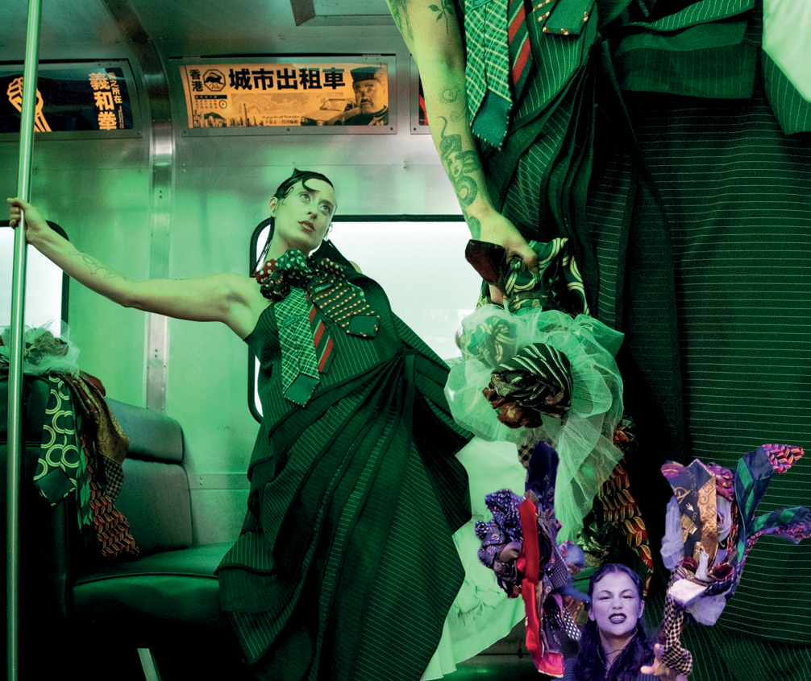
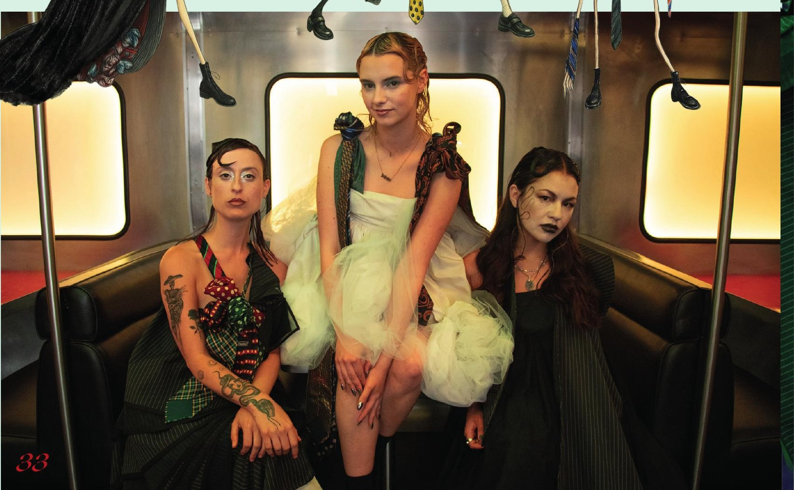

Jonathan Artiero built this collection out of a real divorce — his own unrealistic, movie-sized idea of what marriage should be, and the slow burn of trying to live up to it. Eight looks carry the story from "Champagne Bubbles," all first-night hope, to "The Aftermath," where a model hurls a bouquet of neckties like she's finally letting go of everything.
"My deepest influence was an uncle who passed away before I was born. He left behind drawings of wedding garments — I felt a silent connection to him, as if he'd set me on this path."
"The marriage failing wasn't some huge blowout; it was a slow burn under the weight of impossible standards we never talked about."
"I initially thought about a church, but that felt too predictable. A restaurant that looked like a Chinese train became the perfect metaphor for a marriage falling apart, stop by stop."


Every fabric choice ties back to the marriage narrative — taffeta and tulle for the early, hopeful looks, heavier wool and recycled neckties as the story darkens. Jonathan directed each model toward a different emotional beat: innocence for "Champagne Bubbles," a quiet inner fight for "The Great Pretend," and raw fury for "The Aftermath," where throwing the ties became the collection's most striking image.